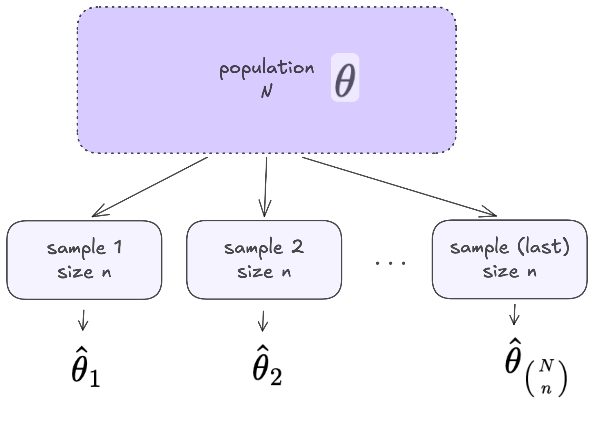
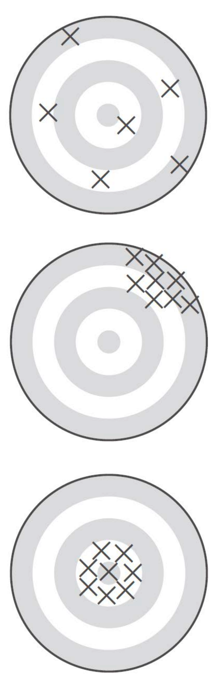

Module 10: Survey Sampling
Estimation with SRS and Stratified Random Sampling
Sampling, Estimation, and Evaluating Estimators
Review: Sampling and Estimation

Review: Sampling Distributions
A random variable is a function that assigns a number to each outcome in the sample space
The set of possible values of a random variable, along with the probability with which each value occurs is called the probability distribution of the random variable
In sampling, estimators are random variables that can be described by a sampling distribution
Review: Random Variables and Expected Value
- Let \(X\) be a random variable that can be described by a probability distribution
- Expected value: \(\mathbb{E}[X]\) is the long-run average value of the random variable
Bias and Variance of Estimation
- The bias of an estimator \(\hat{\theta}\) is the difference between the expected value of the estimator and the population parameter (\(\theta\)) it is meant to estimate. \[Bias[\hat{\theta}] = \mathbb{E}[\hat{\theta}] - \theta\]
- Another important element of estimation is the variance: \(\mathbb{V}[\hat{\theta}]\).
- Mean Squared Error combines them: \[MSE[\hat{\theta}] = \mathbb{V}[\hat{\theta}] + (Bias[\hat{\theta}])^2\]
Evaluating Estimators
An estimator \(\hat{\theta}\) of \(\theta\) is…
- unbiased if \(\mathbb{E}[\hat{\theta}] = \theta\)
- precise if \(\mathbb{V}[\hat{\theta}]\) is small
- accurate if \(MSE[\hat{\theta}]\) is small

Expected Value and Variance for Discrete Random Variables
- Let \(X\) be a discrete random variable
- \(P(X = k)\) is the probability that that random variable \(X\) takes the value \(k\)
\[\mathbb{E}[X] = \sum_k P(X=k)\cdot(k)\]
\[\mathbb{V}[X] = \sum_k P(X=k) \cdot (k -\mathbb{E}[X] )^2\]
Expected Value and Variance Rules
- Let \(X\) and \(Z\) be random variables
- Let \(a\) and \(b\) be constants
\[\mathbb{E}[aX +b] = a\mathbb{E}[X] + b\] \[\mathbb{E}[X + Z] = \mathbb{E}[X] + \mathbb{E}[Z]\]
\[\mathbb{V}[aX + b] = a^2\mathbb{V}[X] + 0\] \[\mathbb{V}[X + Z] = \mathbb{V}[X] + \mathbb{V}[Z] + 2Cov[X, Z]\]
Estimation with Simple Random Sampling
Reminder: Simple Random Sampling
- Every possible subset of \(n\) units from the population of \(N\) units has an equal probability of being sampled.
\[P(\mathcal{S}) = \frac{1}{\binom{N}{n}}\]
\[\pi_i = \frac{\text{total number of samples that contain unit } i}{\text{total number of samples of size } n} = \frac{\binom{N-1}{n-1}}{\binom{N}{n}} = \frac{n}{N}\]
Estimating the Population Mean
We are interested in estimating a population mean for a quantitative variable \[\mu = \frac{y_1 + y_2 + ... + y_N}{N}\]
We have a SRS if size \(n\): \(y_1, ..., y_n\)
Logical estimator: sample mean \[\bar{y} = \frac{1}{n}\sum_{i = 1}^n y_i\]
Expected Value of Sample Mean with SRS
- Can show that the sample mean \(\bar{y}\) is an unbiased estimator for the population mean \(\mu\) under SRS.
\(\mathbb{E}[\bar{y}]=\)
Variance of Sample Mean with SRS
Under SRS
\(\mathbb{V}[\bar{y}]=\)
Estimating Variation of the Sample Mean with SRS
In previous statistics courses…
- Assume infinite or very large populations
- For the sampling distribution of the sample mean \(\bar{y}\), estimate \[\hat{SD}(\bar{y}) = SE(\bar{y}) = \sqrt{\frac{s^2}{n}}\]
Estimating Variation of the Sample Mean with SRS
- Assume a finite population
- More or less precision estimating \(\mu\)?
- We showed under SRS \(\mathbb{V}[\bar{y}]= \frac{N-n}{N}\cdot \frac{\sigma^2}{n}\)
\[\hat{\mathbb{V}}(\bar{y}) = \big(1 - \frac{n}{N}\big)\frac{s^2}{n}\]
Finite Population Correction
finite population correction (fpc): \(\frac{N-n}{N} = (1 - \frac{n}{N})\)
\(n = 100\), \(N = 100,000\)
\(n = 100\), \(N = 20,00\)
\(n = 100\), \(N = 204\)
Estimating the Population Total
Population total: \[\tau = y_1 + y_2 + ... + y_N =\]
Logical estimator for population total: \[\hat{\tau} = N\bar{y}\]
Expected Value of \(\hat{\tau}\) with SRS
- Can show that the estimator \(\hat{\tau} = N\bar{y}\) is an unbiased estimator for the population total \(\tau\) under SRS.
\(\mathbb{E}[\hat{\tau}]=\)
Variance of \(\hat{\tau}\) with SRS
Under SRS
\(\mathbb{V}[\hat{\tau}]=\)
So we logically estimate the variance with
\[\hat{\mathbb{V}}[\hat{\tau}] = N(N-1)\frac{s^2}{n}\]
Summary – Estimating Means and Totals with SRS
Mean
- Sample mean \(\bar{y}\) is an unbiased estimator of the population mean \(\mu\)
- Estimate the variance: \(\hat{\mathbb{V}}(\bar{y}) = \big(1 - \frac{n}{N}\big)\frac{s^2}{n}\)
Total
- \(\hat{\tau} = N\bar{y}\) is an unbiased estimator of the population total \(\tau\)
- Estimate the variance: \(\hat{\mathbb{V}}(\hat{\tau}) = N(N-1)\frac{s^2}{n}\)
Stratified Random Sampling
Stratified Random Sampling
A stratified random sample is one obtained by
- separating the population elements into non-overlapping groups (partitions) called strata, then
- selecting a simple random sample from each stratum
Stratified Random Sampling vs. SRS
Stratified Random Sampling…
- gives more precise estimates than SRS IF variation within strata is smaller than the variation overall of the whole population
- can save money
- allows you to estimate population parameters for strata (subgroups of the population)
- ensures you have units from each strata in every sample
Notation for Stratified Random Sampling
\(N\): population size (number of sampling units in the population)
\(n\): sample size
\(L\): number of strata
\(N_{g}\): number of sampling units in stratum \(g\)
\(n_{g}\): number of units selected from the \(N_{g}\) sampling units in stratum \(g\) (strata \(g\)’s sample size)
Notation for Stratified Random Sampling
\(y_{ig}\): value of the \(i^{th}\) unit in stratum \(g\)
population parameters
\(\mu_g\): population mean of stratum \(g\)
\(\tau_g\): population total of stratum \(g\)
\(\sigma^2_g\): population variance of stratum \(g\)
sample statistics
\(\bar{y}_g\) sample mean for stratum \(g\)
\(s^2_g\): sample standard deviation of stratum \(g\)
Estimating the Population Mean with Stratified Random Sampling
Overall population mean \(\mu = \frac{1}{N}\cdot\tau\)
Overall population total: \(\tau = \displaystyle\sum_{g = 1}^L \tau_g\)
Since the sample in each stratum is a SRS, we know that \(\hat{\tau}_g = N_g\bar{y}_g\) is an unbiased estimator for \(\tau_g\)
Therefore, an unbiased estimator (\(\bar{y}_{st}\)) for \(\mu\) is: \(\bar{y}_{st} = \frac{1}{N}\displaystyle\sum_{g = 1}^L \hat{\tau}_g\)
Estimating the Population Mean with Stratified Random Sampling
\[\bar{y}_{st} = \frac{1}{N}\displaystyle\sum_{g = 1}^L N_g\bar{y}_g\]
\[\hat{\mathbb{V}}[\bar{y}_{st}] = \frac{1}{N^2}\displaystyle\sum_{g = 1}^L N_g^2 (1-\frac{n_g}{N_g})(\frac{s_g^2}{n_g})\]
Estimating the Population Total with Stratified Random Sampling
Therefore, an unbiased estimator for \(\tau\) is:
\[N\bar{y}_{st} = \displaystyle\sum_{g = 1}^L N_g\bar{y}_g\]
And a reasonable estimated variance is:
\[\hat{\mathbb{V}}[N\bar{y}_{st}] = N^2\hat{\mathbb{V}}[\bar{y}_{st}] = \displaystyle\sum_{g = 1}^L N_g^2 (1-\frac{n_g}{N_g})(\frac{s_g^2}{n_g})\]